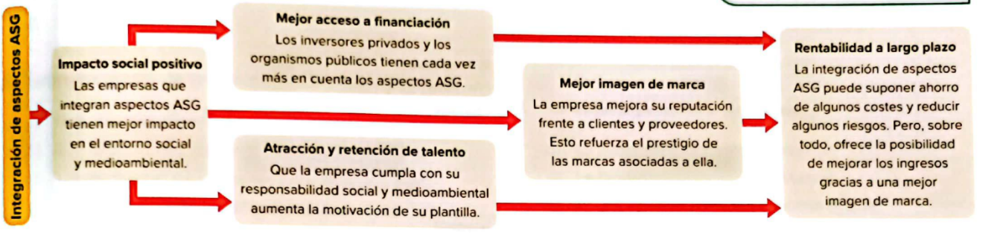

Diseño de estrategia ASG
Compromisos y políticas ASG:
Son principios y acciones diseñados para mitigar estos riesgos y aprovechar oportunidades en sostenibilidad.Normas Europeas de informacion sobre sostenibilidad y el estado no financiero
Ventajas de intregrar los aspectos ASG
